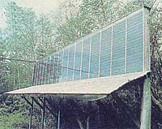
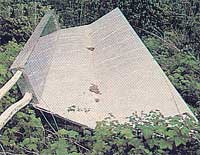
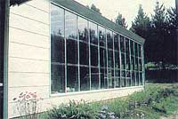
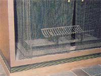
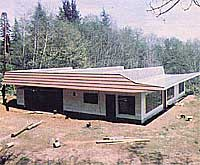

Issue # 73- January/February 1982
Folks who live in cloudy climes can pick up some pointers from this successful sun-power pioneer.
STAFF PHOTOS
The backyard solar collector.
The small water-heating
collector.
Henry Mathew and his first
sun-powered house .
This win dow wall passively
warms the garage/workwhop.
Warm air flows front a rent
high in the wall.
The cold-air return is beneath
the fireplace.
Henry's new solar borne in the
fogbelt nears completion.
Back in 1967, when most of the world was still scoffing at the notion that the sun could be a viable source of home heat, a retired carpenter and construction millwright named Henry Mathew built a six-room solar house on Oregon's cool and very foggy coast. And over the course of the last 15 years, Henry's self-designed system-which consists of 725 square feet of water-type collectors and an 8,000-gallon storage tank-has furnished 75% of his Coos Bay home's heat in bad years, and as much as 90% to 95% "most of the time"!
In fact, the monthly utility bill for his otherwise all-electric, 1,444-square-foot dwelling rises from approximately $18 in the summer to all of $22 in the winter. And Henry's solar success story so impressed the University of Oregon that its scientists have spent the past few years monitoring the system with a battery of instruments.
AHEAD OF HIS TIME
As you might suspect, Henry-a modest, soft-spoken do-it-yourselfer-has had a long-time interest in solar energy.
"When I was a boy," he recalls, "my father would tell me, 'Someday people are going to store up heat in the ground ... solar heat.' Then, when I was 40 or 45 years old, after my father (who was a law-yer) retired in San Diego, he wrote to me, 'If we could buy some of this inexpensive desert land down here and put in a solar pump to irrigate it with, we could make some money.'
"Dad's idea sounded good, so we located a book called Direct Use of the Sun's Energy by Farrington Daniels [1964, Yale University Press . . . Ballantine paperback, $1.95] . After he read that book, though, Dad decided that the project would require too much work, and he backed out... but I was still sure it was feasible. Then I learned that Harry Thomason had designed a successful solar house [see the Plowboy interview with Dr. Thomason in MOTHER NO . 60] , and I knew right ther, that I could build one, too ... and maybe even improve upon his design.
"The people who've found solar energy unsatisfactory," he contends, "usually don't pay enough attention to heat stor age. Now we have rainy periods here, with no direct sunshine at all, that last three weeks at a time. So we have to be able to pack away the heat when it is available. I also believe that most collectors are far too small. Many that I've seen are about a third as large as they should be. Of course, you can't blame people for wanting to economize when they're buying expensive commercial collectors at $20 to $30 a square foot ... but when I built mine, the materials cost only about $1.00 to $1.50 per square foot, so I made sure the panels were big enough to satisfy my needs."
HOW IT WORKS
The Mathew home's rooftop collector consists of a south-facing, 5-foot-high, 80-foot-long array, installed 7° from vertical. The frame is made of wood backed with plywood and a 1-1/2" thickness of fiber-glass (for fireproofing). The heart of the unit is a corrugated sheet of aluminum coated with flat-black paint. A horizontal, galvanized iron, parallel-fed 1/2" pipe runs along each corrugation, and these are tied snugly to the aluminum sheet with wire. Three slightly overlapping glass panels (they're 1/16" X 20" X 30"), placed 1-1/2 inches away from the aluminum, are used to make up each individual panel. Nearvertical headers are positioned at the ends of the collector-one to bring water in and the other to let it out-and arranged so that no liquid can leave until the collector is entirely full.
Another collector of the same general design (it has 325 square feet of surface area) sits on the ground in back of the house, and there's a small unit on the east side that flows into Henry's electric water heater. "A pump forces water to the little collector," Mathew explains. "From there it runs to the east leg of the backyard unit, flows through it, then goes to an overhead pipe, where it connects with the collector on the roof of the house. When the sun's shining and the collectors are stagnated, the water temperature can rise to as high as 175°F."
DOUBLED EFFICIENCY
Normally, according to the University of Oregon's studies, the water temperature would be raised only 5° if it were to flow straight from one end of the rooftop collector system to the other (of course, over a series of passes, the temperature gain would be much higher). but this ingenious gentleman has doubled that per-pass figure by simply gluing a single layer of aluminum foil to the roof with black plastic cement ... and anyone who's ever gotten a sunburn while ocean fishing on an overcast day knows how efficient a reflecting surface can be.
"I used plastic cement, because it sets up quicker than does the asphalt type. Then I rolled out the foil and smoothed it down with a household mop. I imagine that in regions with acid rain problems, the aluminum foil might have to be replaced every ten years or so, but mine's been up a lot longer than that."
After the water is warmed by the collectors, it flows into a 7' X 10', 8,000-gallon tank, which Mathew welded together him-self right on the premises. This container is buried beneath the house and is surrounded by a 6" to 18" insulated airspace that accommodates a cold-air intake and a hot-air outlet.
"The tank," Henry says proudly, "cost me $175 for all-new steel, and since I've been careful to keep as much air out of it as possible, it's developed only a few specks of rust. It should last for another 60 years!
"I thought that the water held in the tank would get very hot in the summertime, but it doesn't. In fact, it stays at about 100°. Then along in September and October-just when the heat begins to be needed-the temperature reaches its peak. Following that, we usually have rain for weeks, and the water will start to cool down ... however, the tank's large storage capacity still allows it to keep the house warm through that period until-by the middle of December-we start to get some sunshine again."
Whenever the thermostat shows unfavorable solar collection conditions, the pump automatically stops, and all the water returns to the tank. Then, when the rooms need heat, hot air from the space around the tank flows-by convection-out of a grill high in the living room... while cold air returns to the tank through an intake positioned below the fireplace.
"The system provides a nice, even, quiet heat," Mathew points out. "During the coldest months it keeps the living room at 75°F, while even the bedrooms and baths, which have no heat vents, often reach 65 °."
There's also a large garage/workshop on the west end of the house, but it's passively heated ... by an attached greenhouse. The home displays a passive solar component, too ... a seven-foot overhang along the south side of the dwelling, which lets the sun stream across the front living area in the winter but shades the same rooms in the summer.
This innovative house, with Mathew doing all the work himself, cost about $10,000 to build. Of that, the materials for the roof collector ran to $1,000, and those for the backyard unit totaled about $325. But as Henry points out, material prices have more than doubled since 1967, so you can figure that it would probably cost at least $20,000 (and likely a good bit more) to duplicate the structure today.
DEALING WITH SUCCESS
Naturally, when the news that someone was successfully using solar energy in the fogbelt began to filter out to a wider world, Mathew was flooded with requests for information. In order to keep up with the deluge of mail and phone calls, he drew up some rough plans of his solar home, which are still available, for $10 postpaid (write to Henry Mathew, Dept. TMEN, 970 Woodruff, Coos Bay, Oregon 97420). Henry has updated the material from time to time, but he warns that some of the information could probably profit from more "modernization". "After all," he says, "we've learned a lot about using solar power in the last 15 years."
In order to put some of that more recent knowledge to use, Henry is now in the process of putting the finishing touches on a second solar house, a scant mile east of his present home. "Since the new location is a bit farther from the ocean, it gets colder in the winter and hotter in the summer. Also the site is partially shaded on winter afternoons, and that forced me to face my collectors 18° toward the east ... so I've overbuilt the solar heating system by 25% to 30%, using three rows of roof collectors. However, they're so compact that, if you were to just drive by, you'd never know the house is solar heated.
"My new collectors are built to tolerate temperatures of around 350°F. They're backed with metal instead of plywood, and I used preformed aluminum flashing that enabled me to snap the pipes in place, rather than tying them on with wire. In addition, I installed corrugated fiberglass, which costs only half as much as glass. These panels are glued in place with transparent silicone and are holding up well against our winter rain, hail, and 100-MPH winds. The roof also has a tremendous 60-foot-wide reflecting area ... which-again-is simply a single layer of aluminum foil over bare plywood. I figure that the barrel and a half of roofing cement cost about $90, and the aluminum foil was about $60 ... which amounts to a pretty inexpensive way to double a collector s efficiency."
The storage tank for the new house is also larger (9,200 gallons) and is insulated with 3-1/2" of fiberglass all around, so the stored heat isn't carried through to the ground.
The nearly completed three-bedroom, two-bath, dwelling cost Mathew $26,000 ($6,000 for the land and $20,000 for materials)... $3,850 of which went into the solar system. But again, he did all the labor himself, even bulldozing his own road in and preparing the construction site.
MOTHER asked Henry whether, after all his years of experience, he'd encountered any problems while constructing the second building.
"With the single rooftop collector on my first house," he replied, "all the water drains back into the storage tank whenever the pump stops. But the new home's three collectors don't all drain instantly or at the same time, and this fact occasionally caused air to get into the line. Then, if the pump happened to start up just as an air pocket hit it, it would lose power. I solved the problem by putting in about 3 feet of 6" pipe, to allow the bubbles to rise out of the system."
Henry also found that his new storage tank, which was built in four parts, was subjected to great changes in pressure when the pump started up ... and eventually one whole section caved in: "I had to weld a lot of heavy steel over the top to reinforce it.
"I can't really say that I had any other problems. However," he grinned, "I did make a lot of changes in the piping system as I went along ... because I just seemed to keep getting new ideas."
Well, that doesn't surprise us a bit. After all, how can a person be a pioneer without new ideas?
COMING UP
Plans for a simple thermosiphon solar heating system will appear in issue 74.
|
 |
 |
|
|
 |
|
 |
|
 |
|
|